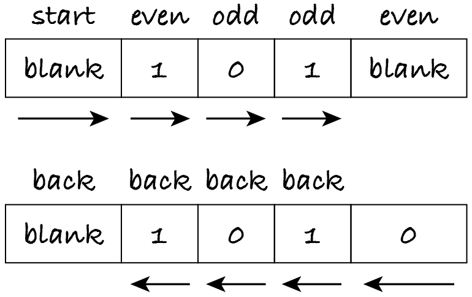

27.1. Turing machine
In 1936, mathematician Alan Turing captured the intuitive notion of algorithms in a formal way. There were no programmable analogue or electronic computers in those days, so he proposed a conceptual machine that could carry out computations.
The following is one of many possible definitions of Turing machines. As we shall see later, it doesn’t really matter which definition we adopt.
27.1.1. Definition
The ‘hardware’ of the Turing machine consists of a tape divided into cells. Each cell holds one symbol. The symbols are anything that’s convenient for the problem at hand: bits (0 and 1), characters, 64-bit integers, etc. The special blank symbol indicates that a cell is empty.
The tape is infinite: it has a start but no end. The machine has a head that is over one cell at a time. The head may move left or right, one cell at a time. The head can read the symbol in the cell it’s over (the current symbol) and write a symbol into that cell. Initially, the head is at the start of the tape. If at any time the head moves to the left of the first cell, the machine stops.
Since the tape is infinite, only part of it contains the data; the rest is an infinite sequence of blanks. The input is the initial data on the tape: the zero or more symbols before the infinite blank sequence. When the machine stops executing, the output is the symbols from the head onwards until the infinite blank sequence starts.
When we write an algorithm in English or implement it in a programming language, the problem definition tells us how many inputs and outputs there are, their types and all the conditions they must satisfy. Likewise, problem statements for Turing machines must tell us the initial and final content of the tape, what symbols are used and where the head is when the machine stops. You will see an example in a minute.
As for the ‘software’ of a Turing machine, it defines when and how to move the head and which symbol to write. This depends on the current state of the machine. There’s a finite set of possible states and we must indicate which one is the initial state.
The program for the machine is of the form
put head on the start of the tape
let current state be the initial state
repeat forever:
if current state = … and current symbol = …:
write symbol …
move the head left or right or not at all
let current state be …
otherwise if current state = … and current symbol = …:
write symbol …
move the head left or right or not at all
let current state be …
…
otherwise:
stop
There’s at most one if-statement per state–symbol pair and so the order of the if-statements doesn’t matter. For n symbols and m states, there are at most n×m if-statements. If there’s no if-statement for the current symbol and state (step 3.4 above), the machine stops.
Turing machines use the three algorithmic ingredients: iteration (repeat forever), selection (the if-statements) and sequence of instructions.
The if-statements can be represented more compactly as a transition table that has one row per state and one column per symbol, including the blank symbol. If there’s an if-statement for a particular state and symbol, then the table entry for the corresponding row and column indicates the execution step: the symbol written (which can be the same as the symbol read), the movement of the head (left, right or stay) and the new state (which can be the same as the current state).
A configuration is made of the current state, the position of the head and the content of the tape. Each execution step makes the Turing machine transition from one configuration to the next.
Let’s see an example Turing machine.
27.1.2. Parity bit
One method to detect if binary data was corrupted during transmission is for the sender to append a bit (0 or 1) to the message, so that the number of ones is even. The added bit is called the parity bit. The receiver checks the number of ones: if it’s odd, it asks for the message to be sent again, otherwise it discards the parity bit.
For example, if the message is 011 then the parity bit is 0 and the sender transmits 0110. If the receiver gets 0111 then it knows something is wrong (here, the parity bit changed) and asks for a re-transmission of the message. This method can’t detect all errors. For example, if the message sent is 011011 and the message received is 100111, the errors aren’t detected because the number of 1s remains even.
Here’s the problem description for a Turing machine.
The tape initially has a blank followed by a possibly empty sequence of 0s and 1s. Add a 0 or 1 at the end, so that the number of 1s is even. Return the head to the start of the tape.
As mentioned before, the description must include the needed symbols (‘0s and 1s’), the input (‘a blank followed by …’), what to do (‘add a 0 or 1 at the end’) and where the head ends up (‘return the head to the start’) in order to know what the output (the data to the right of the head) is.
When providing input and output examples, we only represent the data as a finite sequence of symbols, omitting the infinite sequence of blank cells. The above example can be restated as: if the input is (blank, 0, 1, 1), the output is (blank, 0, 1, 1, 0).
To solve the problem, we should first outline the algorithm, before writing the transition table. Here’s a first rough outline.
Move the head to the right, over the 0s and 1s, keeping track of whether the number of 1s is even. When a blank is reached, write a 0 or 1 accordingly. Move the head to the left, over the 0s and 1s. Stop when a blank is reached.
This outline is incomplete because it doesn’t explain how to determine if there’s an odd or even number of 1s. If a Turing machine had variables, we could count the 1s, but since it hasn’t, we must instead think in terms of states.
All we need to keep track of, as we process the input, is the parity of the 1s, so let’s create two states called ‘odd’ and ‘even’. We don’t change state when reading a zero, but when we read a 1, we change the state from ‘odd’ to ‘even’ or vice versa. When we read a blank, we write a 0 if in the ‘even’ state, otherwise a 1. We then get into a new state, let’s call it ‘back’, where we simply move to the left until reading a blank.
Finally, we must think of the initial state. Initially, we haven’t read any bits, so we should start in the ‘even’ state. However, the first symbol is a blank. We already have an action for a blank in the ‘even’ state: write 0 and start moving back. The only way for a machine to distinguish the start blank from the end blank is by being in two different states. We need therefore an extra initial state, let’s call it ‘start’.
Here’s a better outline of the algorithm, detailing the actions and providing some of the rationale.
Begin in state ‘start’.
Skip the initial blank and change to state ‘even’ because zero 1s have been read so far.
Move right over any 0s and 1s, switching between the ‘even’ and ‘odd’ state when reading a 1.
When reading a blank, write 0 if the state is ‘even’, otherwise write 1, because there’s an odd number of 1s and so we need an extra 1.
After writing the parity bit, move left and change to the ‘back’ state.
Move left, skipping any 0s and 1s.
Don’t do anything when reading a blank: this stops the machine with the head at the start of the tape.
Notice that an outline doesn’t have to spell out all details. For example, I use the word ‘skip’ to indicate that the head moves over the symbols without changing them. However, when writing the algorithm as a transition table, we must always indicate the symbol written, the head movement and the new state.
State |
blank |
0 |
1 |
|---|---|---|---|
start |
write blank, right, even |
||
even |
write 0, left, back |
write 0, right, even |
write 1, right, odd |
odd |
write 1, left, back |
write 0, right, odd |
write 1, right, even |
back |
write 0, left, back |
write 1, left, back |
As the table shows, except when reaching a blank in the ‘even’ or ‘odd’ state, we always write the symbol that has been read, to keep the tape unchanged.
The next figure shows how the machine processes input (blank, 1, 0, 1). The figure shows above each symbol the current state and below the symbol how the head moves. The new state, after moving the head, is the state above the next cell.
The machine begins in state ‘start’, skips the blank by moving the head right and enters state ‘even’. It continues reading symbols and moving right, changing state after reading a 1.
When it reaches the blank after the bit sequence, it writes a 0 because it’s in state ‘even’, moves the head left and enters state ‘back’. It keeps moving the head left in that state until the first blank is reached. There’s no entry in the transition table for state ‘back’ and the blank symbol, so the machine stops.
27.1.3. Implementation
This subsection explains how I implemented Turing machines and the functions I created for you to write, run and test Turing machines. All functions are in file m269_tm.py, so let’s run it to load those functions.
[1]:
%run -i ../m269_tm
The Turing machine simulator will take a transition table, an input tape and an initial state, and execute steps until there’s no transition for the current state and symbol. To simplify things, we adopt the following convention.
Note: In M269, the initial state of a Turing machine is always called ‘start’.
The simulator will be implemented as a Python function with two inputs (a transition table and a tape) and one output (the tape from the head’s final position onwards).
There are many ways to represent transition tables in Python. The simplest, in my view, is a map (Python dictionary) of state–symbol pairs to symbol–movement–state triples: given the current state and symbol, the map tells us what symbol is written, how the head moves and what’s the new state.
I will represent the tape as a list, with one symbol per cell. The blank symbol is represented with None. The current position of the head is a natural number, indexing the list. The movement can thus be represented as how the current index changes: −1 to move the head left, +1 to move it right and 0 if it doesn’t move.
Here’s the transition table for the parity problem, written as a Python dictionary. For readability, it uses constants LEFT (-1), STAY (0), RIGHT (+1) defined in m269_tm.py. A dictionary’s key–value pairs can be given in any order. One possibility is to follow the table I wrote earlier, row by row, to make sure no state–symbol combination is forgotten.
[2]:
parity = {
# (state now, symbol read): (symbol written, move, next state)
('start', None): (None, RIGHT, 'even'),
('even', None): (0, LEFT, 'back'),
('even', 0): (0, RIGHT, 'even'),
('even', 1): (1, RIGHT, 'odd'),
('odd', None): (1, LEFT, 'back'),
('odd', 0): (0, RIGHT, 'odd'),
('odd', 1): (1, RIGHT, 'even'),
# ('back', None): stop
('back', 0): (0, LEFT, 'back'),
('back', 1): (1, LEFT, 'back')
}
An alternative order follows the algorithm.
parity = {
('start', None): (None, RIGHT, 'even'),
# skip 0s and 1s, switching state on each 1
('even', 0): (0, RIGHT, 'even'),
('even', 1): (1, RIGHT, 'odd'),
('odd', 0): (0, RIGHT, 'odd'),
('odd', 1): (1, RIGHT, 'even'),
# when reading a blank, write the parity bit and start moving back
('even', None): (0, LEFT, 'back'),
('odd', None): (1, LEFT, 'back'),
# skip all 0s and 1s, stop when reaching the first blank
('back', 0): (0, LEFT, 'back'),
('back', 1): (1, LEFT, 'back')
}
Note: In a TMA, you can list the transitions in either of these orders, as you prefer.
Before running a machine, I recommend you check it with check_tm, a function that can spot small mistakes, like mistyping a state name. The function needs the sets of input and output symbols, to check among other things that each input symbol is read by at least one transition (otherwise the machine wouldn’t handle all possible input tapes). In this case, the input and output symbols are the same: 0 and 1.
[3]:
PARITY_IN = {0, 1}
PARITY_OUT = PARITY_IN
check_tm(parity, PARITY_IN, PARITY_OUT)
OK: the transition table passed the automatic checks
All’s well with this machine. Here’s a bogus machine to illustrate some errors that check_tm spots.
[4]:
wrong_parity = {
# wrong name for initial state, which becomes unreachable
('begin', None): (None, RIGHT, 'even'),
# state, symbol and movement in wrong order, in both tuples
(None, 'even'): (0, 'back', LEFT),
# missing movement
('odd', 1): (1, 'even'),
# typo in state name, which leads to another unreachable state
('eben', 1): (0, RIGHT, 'even'),
# symbol 2 is read (expected on the tape) but is not in input nor written by another transition
('even', 2): (2, RIGHT, 'even'),
# symbol 3 is written but not used in output or by another transition
('even', 1): (3, RIGHT, 'odd')
}
check_tm(wrong_parity, PARITY_IN, PARITY_OUT)
ERROR in (None, 'even'): None is not a state name (string)
ERROR in (0, 'back', -1): back is not STAY, LEFT or RIGHT
ERROR in (1, 'even'): not a tuple (symbol, movement, state)
ERROR: no state named 'start'
ERROR: no transitions to states {'begin', 'eben'}
ERROR: no transitions read input symbols {0}
ERROR: symbols {2} are read but no other transitions write them
WARNING: symbols {2, 3} are written but no other transitions read them
Did you spot the error I didn’t mention in the comments? (No transition reads 0.) Such small errors can be difficult to find and fix just by testing the machine, hence it’s always best to check the transition table first. The checking function can’t guarantee the machine is correct, but at least it can catch some mistakes.
Now we can run the machine with function run_tm. It looks up the dictionary with the current state and symbol and carries out the associated actions: write a symbol, move the head, change the state. It keeps doing this until it finds no entry for the current state–symbol pair.
The Turing machines you will be asked to write in M269 are simple and will have short inputs. If your machine hasn’t stopped after 100 steps, it probably entered an infinite loop, and the simulator will stop.
Since the tape is only infinite to the right, the simulator also stops if the head goes left past the first position.
Once the simulator stops, it returns the content of the tape from the head’s position onwards. That’s the output of the machine. Here’s the output for the example input given in the figure above.
[5]:
run_tm(parity, [None, 1, 0, 1])
[5]:
[None, 1, 0, 1, 0]
To see what’s happening step by step, the simulator can print out the configurations it is going through. Each configuration is printed in the form
counter current state [symbols left of the head] current symbol [symbols right of the head]
where the counter starts at zero for the initial configuration. The configurations are printed by enabling debugging mode through a third, Boolean argument.
[6]:
run_tm(parity, [None, 1, 0, 1], debug=True)
0 start [] None [1, 0, 1]
1 even [None] 1 [0, 1]
2 odd [None, 1] 0 [1]
3 odd [None, 1, 0] 1 []
4 even [None, 1, 0, 1] None []
5 back [None, 1, 0] 1 [0]
6 back [None, 1] 0 [1, 0]
7 back [None] 1 [0, 1, 0]
8 back [] None [1, 0, 1, 0]
[6]:
[None, 1, 0, 1, 0]
We can use test tables to run a machine with several inputs and compare the actual outputs with the expected ones. The test table just includes the input tape, the debug parameter and the expected output for each test. Debugging is initially off but we can turn it later on for tests that fail.
[7]:
parity_tests = [
# name, input, debug, output
('no bits', [None], False, [None, 0]),
('just 0', [None, 0], False, [None, 0, 0]),
('just 1', [None, 1], False, [None, 1, 1]),
]
I recommend checking the test table with check_tm_tests before running the tests. This function also needs the input and output symbols, to check that each test only uses those symbols.
[8]:
check_tm_tests(parity_tests, PARITY_IN, PARITY_OUT)
OK: the test table passed the automatic checks.
Finally, we can run the tests with the new function test_tm, which has two parameters: the machine (transition table) to test, and the test table.
[9]:
test_tm(parity, parity_tests)
Tests finished: 3 passed (100%), 0 failed.
The function takes an optional third parameter, a Boolean that controls whether the tests’ names are printed as they’re executed. This helps tracking what’s happening, especially when debugging several tests.
[10]:
parity_tests_debug = [
# name, input, debug, output
('no bits', [None], True, [None, 0]),
('just 0', [None, 0], False, [None, 0, 0]),
('just 1', [None, 1], True, [None, 1, 1]),
]
test_tm(parity, parity_tests_debug, show_tests=True)
Running test no bits...
0 start [] None []
1 even [None] None []
2 back [] None [0]
Running test just 0...
Running test just 1...
0 start [] None [1]
1 even [None] 1 []
2 odd [None, 1] None []
3 back [None] 1 [1]
4 back [] None [1, 1]
Tests finished: 3 passed (100%), 0 failed.
Now over to you, for some practice.
27.1.4. Checking passwords
We want a machine that decides whether the tape contains a valid password: a password with at least one letter and at least one digit. To represent all English letters and all 10 digits, we will use only two symbols: characters ‘a’ and ‘0’.
The input is a possibly empty sequence of those two characters. The machine should write at the end of the sequence the corresponding Boolean, keep the head over it and stop. The set of symbols thus includes two further symbols, the Boolean values, to represent the output. For example, if the input is (‘a’, ‘a’), then the output is (false). Remember that in this case the output is the sequence of symbols from the head to the right. The final tape is actually (‘a’, ‘a’, false).
Exercise 27.1.1
Outline an algorithm for the Turing machine. Don’t forget to indicate the states.
Exercise 27.1.2
Complete the transition table below. I wrote the first two transitions for you.
[11]:
VALID_IN = {"0", "a"}
VALID_OUT = {True, False}
is_valid = {
('start', 'a'): ('a', RIGHT, 'letter'),
('start', '0'): ('0', RIGHT, 'digit'),
# add your transitions here
}
check_tm(is_valid, VALID_IN, VALID_OUT)
is_valid_tests = [
# case, input, debug, output
('empty pwd', [], False, [False]),
('no digits', ['a', 'a'], False, [False]),
('no letters', ['0'], False, [False]),
('both', ['0', 'a', '0'], False, [True])
]
check_tm_tests(is_valid_tests, VALID_IN, VALID_OUT)
test_tm(is_valid, is_valid_tests)
Remember that you can see the step-by-step configurations by setting debug to True. In that case you may wish to add True as a final argument to test_tm.
Exercise 27.1.3
Imagine the input may include all 26 English letters, both in uppercase and lowercase, and all 10 digits. How would you change the transition table to check that the input is a valid password, i.e. has at least one letter and at least one digit? Don’t write the table: just describe what additional entries would be needed. (The table would be rather long. Can you estimate how many additional entries are needed?)
Exercise 27.1.4
Now imagine we require a valid password to also include at least one of the three punctuation marks ‘.’, ‘!’ or ‘?’. Which states would you need?